Electric bus performance, Bengaluru
Formulated the first research project on the performance analysis of BMTC’s first electric bus.
A multi-talented professional working at the intersection of climate research, classical music, entrepreneurship, and public service. Ph.D. research scholar in Climate Change (Energy & Mobility) at the Indian Institute of Science.
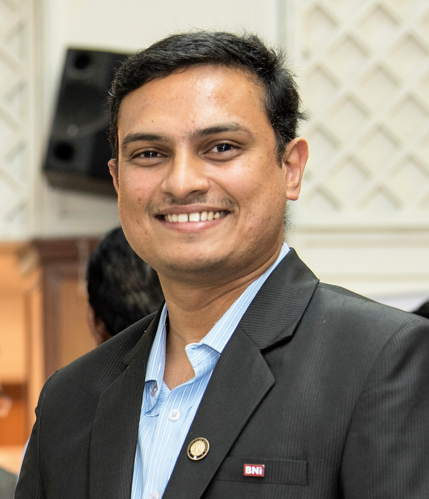
Shravanth Vasisht M. holds a B.E., M.Tech., and MBA, and is a Ph.D. research scholar in Climate Change with a focus on energy and mobility at the Indian Institute of Science, Bengaluru.
His work spans nationally significant energy projects, a travel enterprise with global collaborations, a non-profit devoted to culture and education, and a long-standing life in Carnatic violin.
Each chapter of the work is presented with the same professional intent: research rigour, cultural depth, and public impact.
Energy, mobility, and the environment.
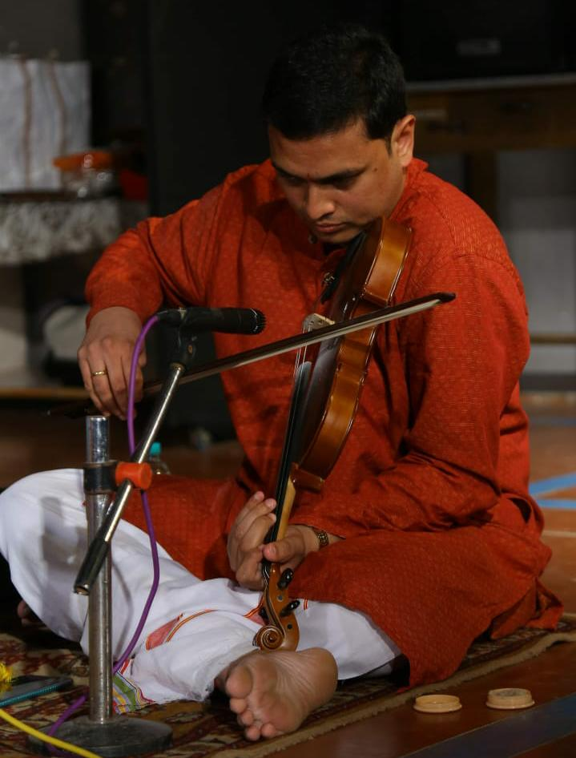
Carnatic violinist and promoter of the arts.
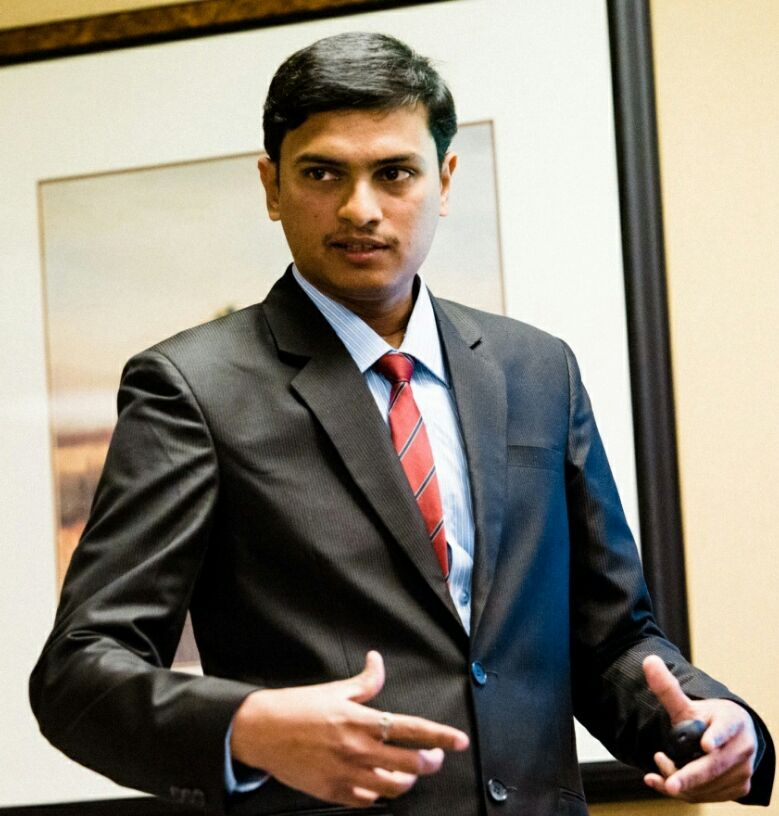
Founder of Tim-Tim Holidays, Bengaluru.
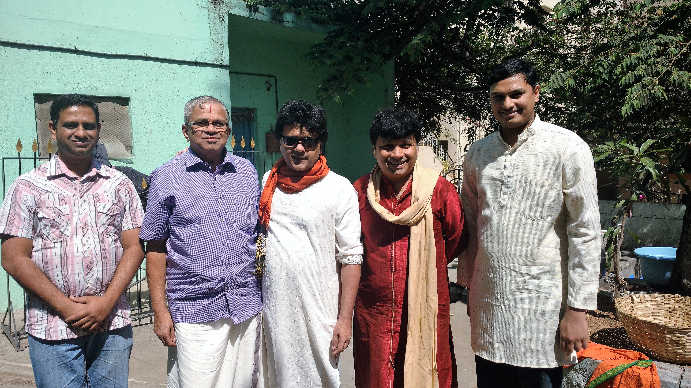
Nadopasana Foundation: culture, education, wellness.
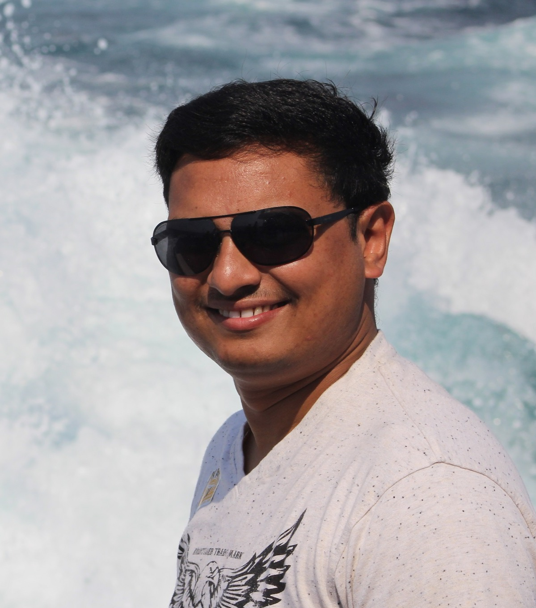
Vasisht Clicks — nature, people, railways.
Initiator and first implementer of rooftop solar photovoltaic systems on a rail coach, in collaboration with the Ministry of Railways. A prototype completed a week-long trial run with three popular trains. A dedicated coach was manufactured at the Integral Coach Factory, Chennai.
Publications in international journals, nationally implemented projects, and invited lectures across India and abroad.
Research interests include renewable energy, electric mobility, energy policy, urban planning, and the performance of solar photovoltaic systems.
Formulated the first research project on the performance analysis of BMTC’s first electric bus.
Key role in establishing a solar PV plant to power a national heritage building at the Indian Institute of Science.
Research and development on how atmospheric conditions shape the output of solar photovoltaic systems.
Design recommendations featured in the first RDSO specification for manufacturing and operating solar rail coaches in India.
Energy, Vol. 118, 2017. DOI: 10.1016/j.energy.2016.10.103
Clean Technologies and Environmental Policy, 2017.
Solar Energy, Volume 131, June 2016.
Current Science, Volume 110, Issue 5, March 2016.
Current Science, Volume 107, Issue 2, July 2014.
Research in climate change, Grantham Foundation / Imperial College London.
Presented Solar Assisted Power Supply for Rail Coaches at NACSEE 2014, Providence, USA.
Solar Power for Rail Coaches, Intellectual Property Rights Day, Jain University, 2014.
International Conference on Renewable Energy Resources and Management, 2012.
First trained in Karaikudi under Vid. Pudukottai Ramamoorthy (1998–2000). Presently a disciple of Vid. H.K. Venkatram, Bengaluru. Senior Grade in Carnatic Music (Instrumental), KSEEB, 2011.
Founder of a sought-after classical music contest, organised in Mysuru since 2008.
Organiser of Carnatic concerts, facilitator of resources for musicians and students of art, and promoter of artists.
Vid. H.K. Venkatram · Vid. Pudukottai Ramamoorthy · Vid. Dr. T.T. Srinivasan · Vid. Dr. C.A. Nataraj · Vid. H.K. Narasimha Murthy · Vid. Kumaresh R. · Vid. N.R. Prashanth · Vid. Madokaram Prashanth Aiyengar · Vid. Dr. B.S. Srikanthan · Vid. G.S. Nagaraj
Founded in 2012 in Bengaluru. A travel company led by engineers, entrepreneurs, economists, musicians, and artists, known for precise planning and global collaborations.
Specialisations include holiday packages, flights, resorts, honeymoon itineraries, corporate outings, pilgrimage, educational tours, wildlife, classical music and dance tours, and yoga retreats.
Andamans, Sikkim, Rajasthan, Ladakh, Himachal, Meghalaya, Karnataka, Goa, Kashmir, Kerala, North-East, and more.
Bhutan, Bali, Europe, Japan, Maldives, Kenya, New Zealand, Scandinavia, Egypt, and more.
Founder and Managing Trustee of a Bengaluru non-profit focused on culture, education, and wellness — a consortium of service-oriented professionals.
Resources for musicians and students of art, and regular organisation of classical music concerts.
Certified career counsellor in psychometrics (Innominds Academy and Global Psychometric Cafe). Volunteer mentor and life coach for students.
Facilitator of renewable energy solutions for organisations, including fundraising support.
A selected set from the photography practice. More work lives on Instagram and Facebook.
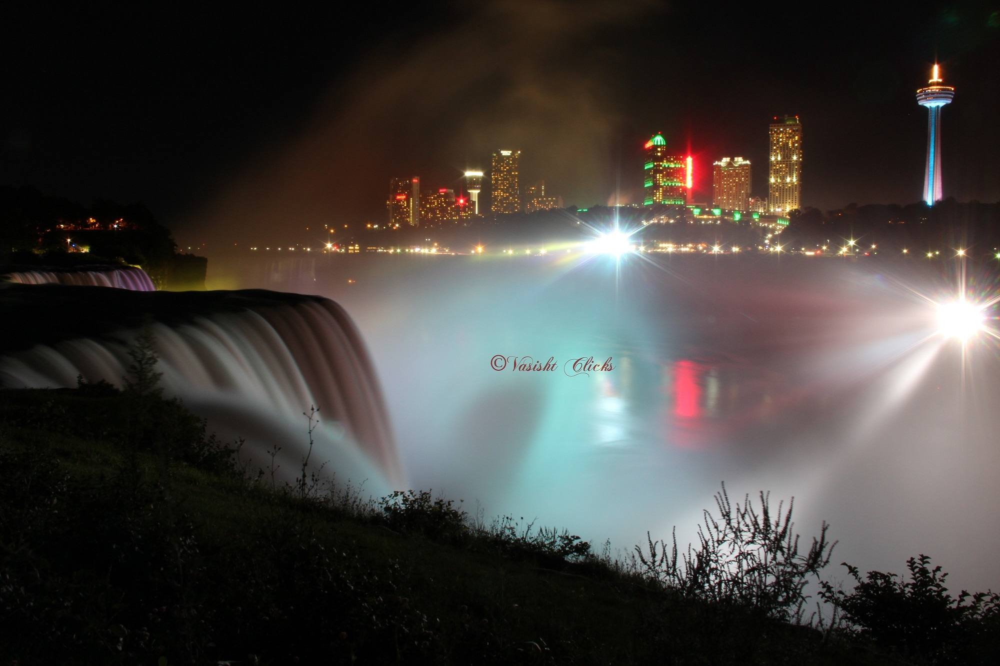
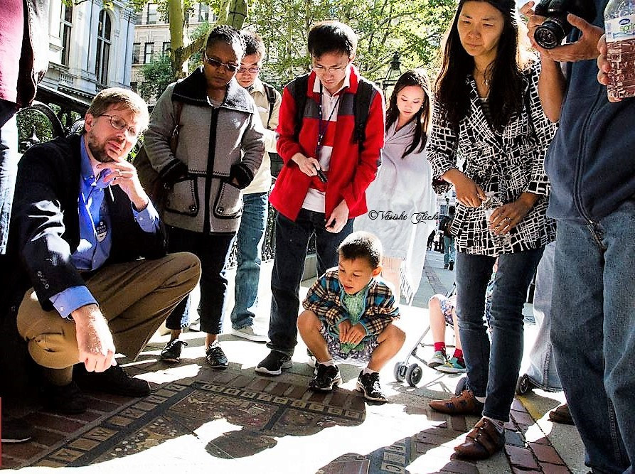
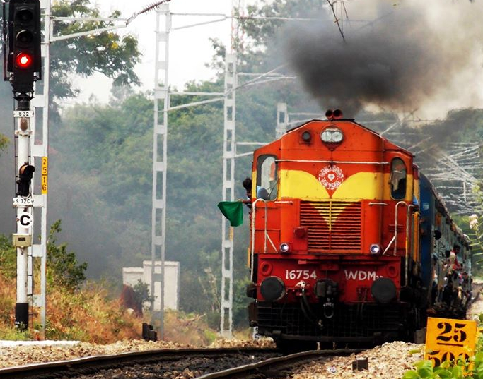
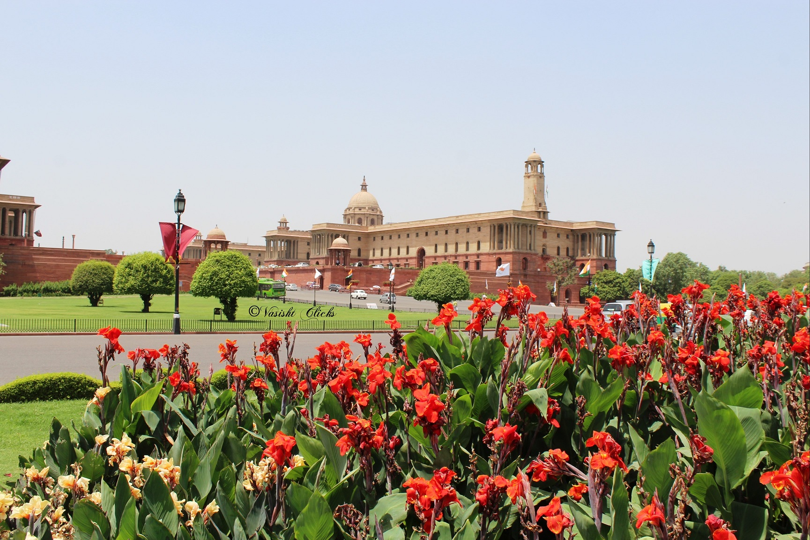
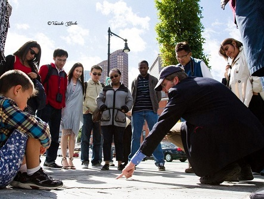
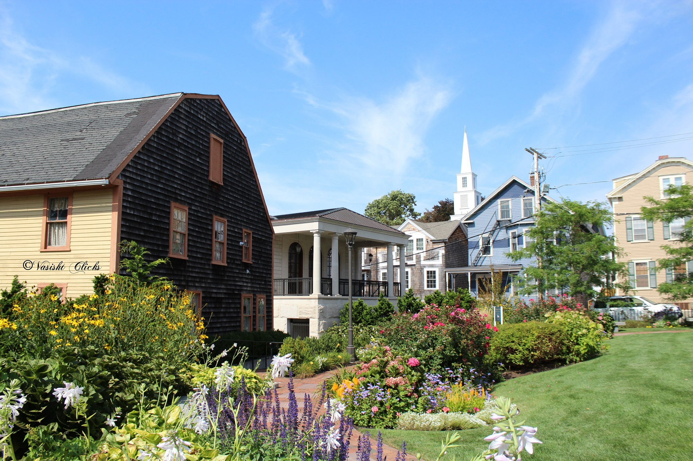
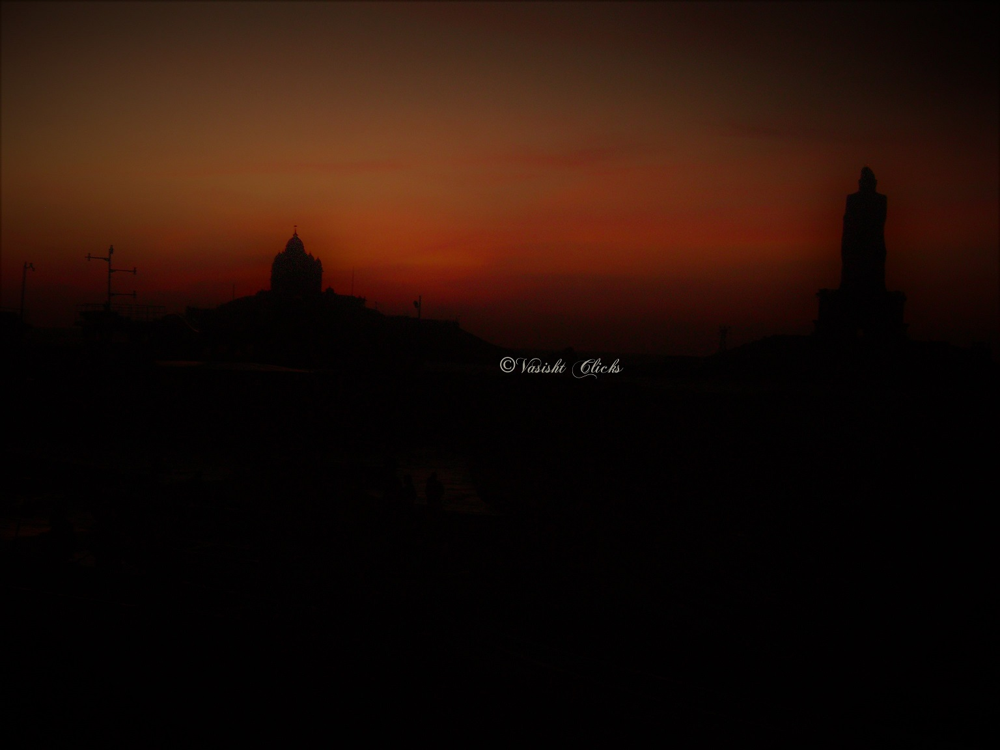
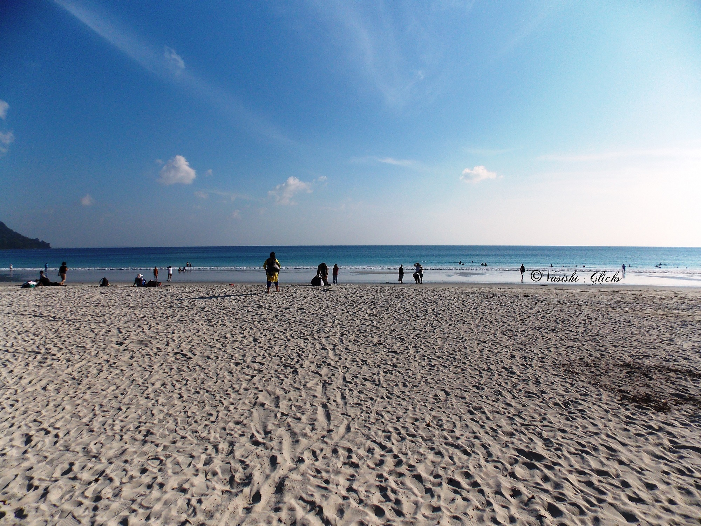
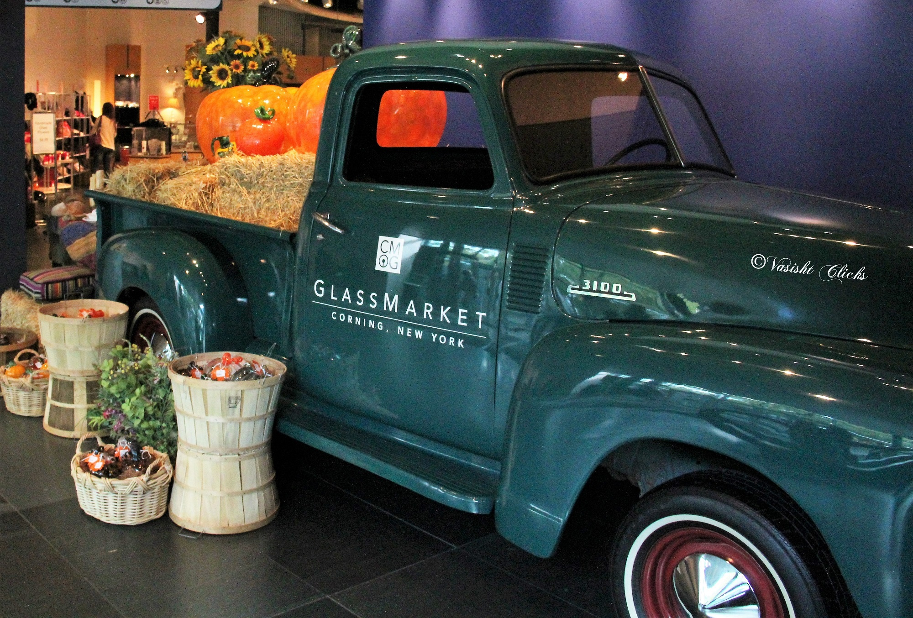
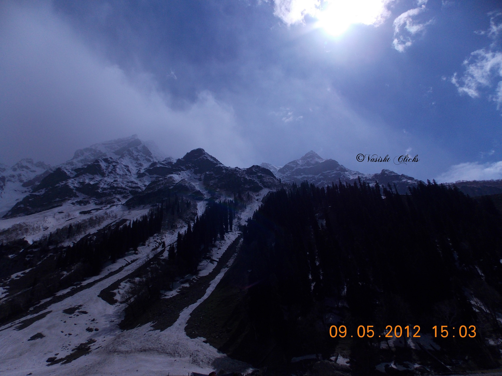
Write for research, travel, the foundation, or photography.